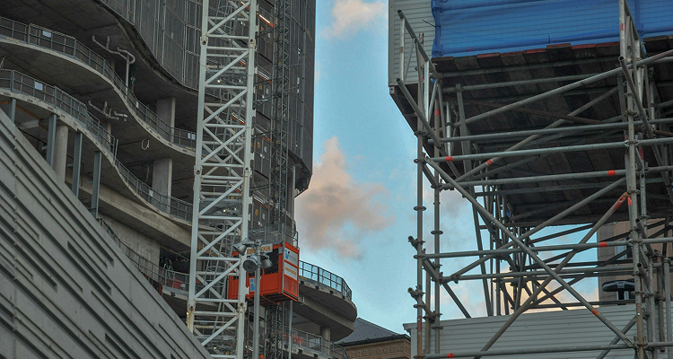
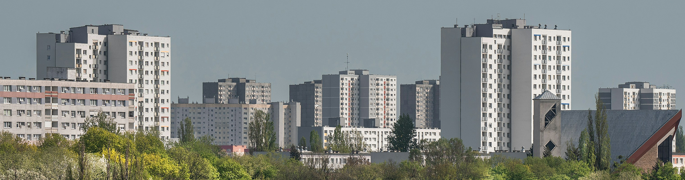
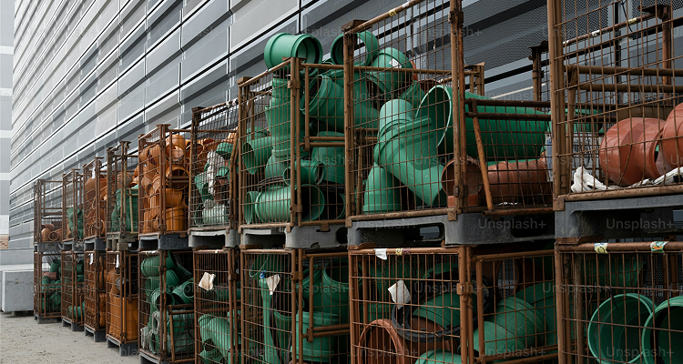
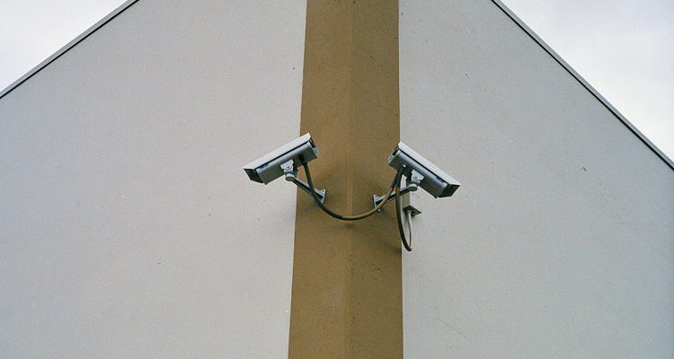
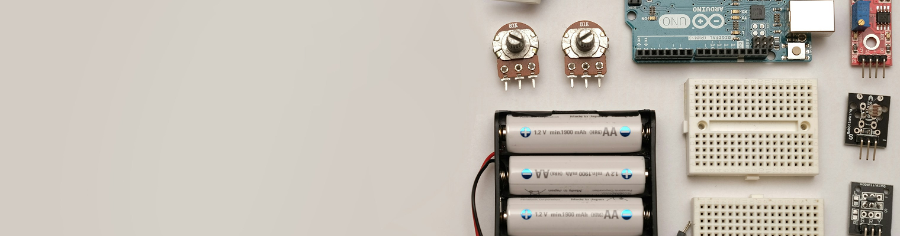

넥스트랩 제품
안정성
다양한
산업 환경
에서
검증된 안정성
산업 환경별 적용 사례
건설·토목 프로젝트
01
위험 작업 구간 단일 플랫폼으로 통합 관제
02

철거·개발 현장
03
출입 통제, 안전사고 예방, 낙하물 감시 강화
04
아파트·주거단지
05

추가 적용 사례
입주 전 보안 강화, 야간 안전 모니터링
06
야적장·창고·임시 부지
07

장비·자재 도난 방지 및 무단 출입 감시
08

외곽·산지·하천·저수지·도로
09
전기 인프라 없이 365일 운영 가능한 최적 솔루션
10
